目录
本期介绍
专题
自我感动的大学生活/吴岱晖
你都如何回忆八百米/马料水小野猪
两个夏天/西班牙小苍蝇
行吟
春秋大梦/西班牙小苍蝇
说/西班牙小苍蝇
人虫/朱恋淮
世见
人之困境/詹哥哥
怀旧·理性·未来/马鞍山小麋鹿
艺眼
《奥义书》中梵我观与道家哲学相似之初探/西班牙小苍蝇
《年月日》中的 “神” 与 “实”/张韵秋
故事
说棋/醒月楼主人
牛肉饼/佚名
富贵闲人/西班牙小苍蝇
尺牍
王小波到底有多伟大/冯唐
分享
春草青青 春虫喑喑
当我路过每一片田地每一片树林
像极了你——
不拘是土里长得正好的风
枝头开得热闹的鸟鸣
你同那么多的花草熟悉
我从那么多的花草里都寻见熟悉的你
草木记忆
容易凋敝
日之将夕
你还像多久多久之前那般欢喜三月的细泥
我愿你住进春季
“你能让满山花开我就来”
奶奶——
无题
墓地青草长责我无哀色
又岂知
昨夜棋落两色温酒成双
挖土豆的人
这是一个下午，晚风吹过田野
夕阳不肯落去，照亮母亲与土豆的合影
锃亮的镢头在被高高举起的一瞬间
和夕阳打一个照面，两种光芒
干着两种身份有别的事情
镢头拼命似的，狠狠地往土里钻
似乎要把一生的苦全部刨出来
晾晒在大地之上，任岁月风干
那根木柄握在母亲手里，得心应手
几十年没有松开，一镢头一镢头
使劲在每一块泥土里苦苦寻觅
深埋大地深处的生活果实
我听见大地在哭泣，那么深沉
泪珠被泥土掩埋，不小心挖破一颗
我发现流出的泪水多么浑浊
半个生命
如果我娶了
一个天作之合的妻子
那我一定做牛做马
给她舒服的大房子
做值得她骄傲炫耀的丈夫
如果我是一个孩子的父亲
我一定风尘仆仆
给他一棵白菜的种子
让他长成一块干净的翡翠
可是
如果我是我自己的我
我一定粉身碎骨
拒绝当牛做马
拒绝风尘仆仆
给自己一份儿矫情的自由
是谁出的题这么难
我拿起锯子
把自己拦腰砍断
我猜测着答案
顺便撕掉一半生命
说
你喜爱照镜子，女人的天性
我成为你的持镜人，右手持花
习惯耽于迷恋，牙齿禁闭语言
镜子里，眼睛里，两个你
古老的哲学:存在相同的两片树叶
你还是喜爱照镜子，天性不改
我依旧是你的持镜人，动作娴熟
拿着镜子，也右手持花
想象带有雾气，眼睛也酸痛
实像？虚像？开始分辨后就逃不脱
还能是持镜人吗？也右手持花？
预言的酒发挥效力，“镜中人难懂”。
醒后，忘了拿走掉了纽扣的衬衫，
我穿过的河流打湿过它。
你说:“我活在镜子之外”
在珠帘之外，也在我心事之外。
勇气
朱恋淮
我四处收购勇气，
优质或劣质，没关系，
数量庞大，堆积在房间里。
穷人才愿意卖给我，
犯人，酒鬼，流浪汉，
湿哒哒沾着泪 ，
像绝望、悲伤和愧疚一样难闻。
动物们觉得无所谓，
与我交易后，
转身回到笼子里。
我四处收购，一贫如洗。
在黎明屏息把勇气都吞下，
开始想你。
烟
从前我藏起你所有的火机 堵着门不许任何人给你买烟
我自信于 那是爱你的最好方式
许多年以后
当你载着全家出游 连开八个小时在京藏高速上赶路时
月光照不进的浓夜里
我成了那个 默默擦亮火柴 给你递上一支烟的人
你一句话也没有说
我们交换座位
直到我握紧方向盘
你缓缓地 长长地 呼出一口烟
那烟雾拂过你的胡须 你的鼻尖 你的眼
渐渐将你笼罩 然后藕断丝连
也就是在这烟雾里
我重新看见了你
爸 你的确累了
尽管你正沉浸着难以言说的安乐
你是我右手指尖的一个疣
你是我右手指尖的一个疣，
在初春的早晨悄悄露出一个纯良无害的表情，
带着少年不识的愁。
并非尖锐苦痛才让人难以忍受，
就像你，不痛不痒地狰狞在我所有动作上的疣。
我漠然处之，你生根发芽；
我嗔目怒斥，你遍地开花。
我选择忘记，去小西天冻掉你这块烂皮；
夹在春季过敏人群中的我哭了，为的是不一样症状的我要除掉独一无二的你。
冷冻，钻心；结痂，留疤。
直到忘却你的努力变成刻骨的回忆，
在表皮下爆出又一朵血花淋漓。
你是我右手指尖的一个疣，
只能让我变得丑陋；
可怜我爱恋你时联想得起诗意万千，
现在却只堪把你比作一个疣。
静静
你是一风铃 悬于我腰
我是屋上檐 偕偕伫立
你似一琥珀 含于我容
我是眼内眸 肃肃注视
你犹一环珮 挂于我身
我是柳梢风 翩翩静止
你如一游鱼 藏于我心
我是湖中泊 沉沉不语
我只愿静静 不愿因我言语
把你摇曳 让你落下春雨
我只愿静静 不愿因我举止
将你颤碎 令你溶漾秋心
且看 且听 且信
水之湄涘沚 鸟之嘤啭啼
我曾携你走过 静静
无题
今夜月色无言如旧
将沉默映入聚散的河流
我把月光掺入理智捣碎
细细描摹梳淡的眉眼
把高傲磨成胭脂
点染双颊和酡红的唇吻
今夜万川流逝如旧
将暗语卷入蜂涌的游潮
四月的风裹挟缠绵而过
踏过高贵的尘土
鬓间的摇铃 悸动从中作响
今夜一切消散如旧
我仍身陷泥淖 触碰光影的分割
我的爱身披禁色
狂热地蔓延在每一寸土地
而你却只是践踏而过
从不曾摩挲一粒石头
月寄
一辞数月，两地无恙。
三年掠影，四季天荒。
醉游首阳，别时绀香。
莺时燕归，槐序春凉。
鸣蜩夏始，暑月荷香。
兰秋还家，不觉仲商。
霜序秋近，子春望江。
阳复难成梦，穷冬雪落窗。
我想住进你的眼
我想住进你的眼
我路过春天的时候
你美像一片不切实际的春林
每一分钟都在长漂亮的树，和秘密
我徘徊在林子之外
无法凭其中之一揣度你，走近
你每一滴碧绿的鲜活让我喜，让我惊
却守口如瓶小鹿般的心情
无限接近你，化作无限接近绝望的灰
等春风再吹绿草色青青
涅槃，必先焚烧自己
然后重生，在爱慕者的眼睛
那就，咀嚼我的亡魂吧
我灰暗的欢喜，怯懦的忠贞，清醒的梦境
左手挽着孤独，右手牵着玫瑰
我将去长长的旅行，长长的想念你
可我不想长长的想念
我想住进你的眼
生于母，归于母
破碎的血肉，
妇人紧紧拥着
年轻的，犹有余热
黑漆的影儿，
天帝目示尘落
怨懑的，无敢动作
藏身的血瞳
鬼将握着链锁
凝听着，泪液浑浊
碑墓的灯火，
白发兀自跪默
摇曳着，明暗闪躲
——咿呀天不天
喂呀人浑噩
咿呀地无地
喂呀魂业殁
咿呀相聚首
喂呀不见我
—— 喂呀寻自由
咿呀多轻纵
喂呀去远方
咿呀长苟且
喂呀言敬亲
咿呀索母命
焕新的棺木，
暗风一缕掠过
蹒跚着，人人无惹
零丁的土坡，
影儿轻轻摩挲
哭化的，涓滴成河
漂泊的魂灵，
妇人紧紧拥着
安详的，闭目睡了
你的味道
从长江头尾吃到黄河岸边
辣或酸
米或面
肉夹馍里的肉
神似圆米粉的臊子
麻辣火锅里
也有从小习惯的辣椒
薄荷糕清清雅雅
小龙虾热火朝天
羊杂割厚实温暖
这些都是极好的
唯独缺了
长长夕阳下
袅袅炊烟里
你的一声
开饭
孤独启蒙
请解释孤独,
否则我不懂,
请为它祈祷,
百本书来解释,
让一千位博士以它为论文选题,
并因此延毕。
请解释孤独, 定义,公式,模型,希腊字母。
精确到每个字,每个标点,
每次呼吸,每次月全食，
每口独自咽下的冷水
忘带的伞,丢失的手套,
你。
春天很好
可以把杨树柳树直⾄至松柏都看够
把棉鞋球鞋凉鞋都⼀一⼀一穿上脚
春天很好
可以陪你从⼀一年开始
把四季都看⽼
桥
你在彼岸
一空倚傍
我在此岸，
永瞻你风采
只是，
谁来告诉我
你我之间的桥
在哪里？
烂漫
只是带着尝尝鲜的心态去逛眼镜市场
却发现了这株深泽绛紫
镂空的墨梅 像窗棂里走出的江南春色
在风沙飞扬的北国
思念遥远的南都
待到山花烂漫时 她在丛中笑
亲爱的武汉
我把你爱的梅花 戴上鬓角
我又想你了
想念与你有关
在明亮的雪地里
我整夜整夜
给你写诗
想念是午后的群山
莲花里怎会找寻不到
寂默、荒凉、空旷的野草
花一般斑斓
那斑驳里没有你的呼吸
与你有关
想念与你有关
哗啦啦是明珠流泻
千重山，千万重山
千万棵古木在心头
融化吧，你这大地
沉睡吧，你这太阳
我只求无边无际的荒原
求黑暗遮住盲目的蝶
祈祷你撞进我的梦里
身后是漫漫雨帘
在明亮的雪地里
我整夜整夜
给你写诗
灵魂是午后的群山
想念与你有关
距离
你永远是那神秘的天心
我却只能做匍伏的海洋
你我同会湛蓝到老去
只可惜
我们永远隔着一个世界的距离
假如
假如风吹遍田野
吹不走烂漫的春天
假如云遮过视线
遮不住当初的屋檐
假如讲着故事
又睡倒在
月光下的膝前
假如能再笑着合影
而不是流着泪
翻开老照片
假如你还在我身边
而没有长眠
列宁之死
莫斯科的严冬未能留住伟人的生命，
正如烟雨朦胧的台城未能留住你离去的步伐。
仓惶。
悲怆，
是后世岁月的眼泪。
自由，
是你留给我最好的纪念。
伟人也是凡人。爱情，也终不过饮食男女。
被时间推着走，你不许我说以后。今日未完，何来以后？
就如经年，我路过这里，你途经它地。还会想起当年拥抱过的站台和承诺的往事？
列宁已逝，世界关灯。
爱人如己。
一赠一答
鹧鸪天 夜赠梦尘
夜半京华等闲身，远山冥冥未入神。忽觉今日行书旧，不如昔人笔墨新。
从别后，可怜春。几回俗事几回尘。何能各对金樽月，同是风里浣花人。
鹧鸪天 梦尘居士赋以和
有限春光无限春，楼头落叶愈精神。逍遥秋景因君起，旖旎清风为某陈。
争过雁，笑流云。不知何处尽浮沈。嘉宾鼓瑟吹笙去，且着白袍晚自吟。
相思树
我不害怕
南风吹来
桃花，没有雨
我不担心
柳丝缠绕湖水
水，没有声音
我不恐惧
古塔伸向月光
月光，逃离
因为我相信
这个春天
失去的一切
酿作了你
遣怀
瑶琴鼓破宝钗分，纵解丹青懒写真。
箫笛十年终绝念，诗书半卷已封尘。
回生不见梅边客，取水难逢井上人。
笑剪乌丝三万缕，送将倩柳扮新春。
还有
有些事情我没有做完，
因而我还不能离开你。
例如说
撑起一座洞窑，
用三月的手指，
用时间，敲落士女手中的蒹葭——
下酒，来煎人寿。
例如说
钻凿石山，深埋玉斧
登上了西洲楼头，望见他——
提携玉龙
等到海棠花落的时候
我上了年纪的祖父
成为不会说话的书
等到花再开的时候
田野就会丰收
我和我的祖先
一起在这个世界的胃里
滚动
等待被
消化
还有我、和你的身体，和我们的土地
还有一些嚼得太碎的
神话故事
还有我不能告诉你的事
和我不能离开你的理由。
风水
我是风 覆你唇前
你是水 俯我身下
初春的鱼游弋 柳絮飞梨花洒
告诉我 其实你心底藏着秘密
你不语 咬下一口樱桃 清香四溢
明知风静止 同你看柳絮梨花
我不轻举也不妄动 任鱼游动任水涟漪
倘若你不下命令 风就不吹皱池中春水
请不要爱我胜过爱你自己
廉价的花裙
与外套
它们廉价到
是我两天简单伙食费用相加
而你仍然迟疑买下它们
惊喜穿上它们
“我可体面？”
你问
掉皮的平底鞋
白袜子裸着
我看不懂你的搭配
你有多少年没穿高跟鞋
我不记得
你也不记得罢
你用清水胡乱抹脸
以健康之名
没带眼镜的我
看到黄褐斑在你脸肆虐
“我是不是太丑”
我突然梦到相册里的你
梦到乳白的墙壁
我说不是
你拉着我的手逛批发市场
来回三次为一件衣裳
你把我打扮得漂漂亮亮
你说对不起
带你来这里
我突然想拉你到我的未来
那里我拉着你
试图用所有的笑意压缩掉所有皱纹间的间隙
烟火
我们，同一个起点，不同的终点。
如果同时，就像烟火
无题
风撩乱了你的发髻
而你拒绝让我整理
我一直把你当做情人
而你始终把我当做知己
送你的独白
我若是一枝红豆
流连于南国的风景
如果你 说你也了解
我便静默地等
等青涩结成我红色的外衣
无论你的心 守望或逃离
我都等你在原地
我如是一株相思
生长在爱情的位置
遇见你 说你也愿意
我定不再犹豫
摘月亮藏进你温暖的掌心
无论你的手 摊开或紧握
我都爱你的侧影
亲爱的你 请记得
当你想我时 转过身来
我就会轻轻地 落在你手里
而当你缓缓地 念出我的名字
你会看到 我整颗沉淀的心
都是为你
⽩⾊衬衫
棉花
云彩
吸管⾥里流出一滴牛奶
一条鲨从头顶游过
光滑的鱼肚
按捺着身下
起伏的海
飞雪
栀子
邻居家的狗龇出牙齿
粉笔细末呛哭了晨曦
鸽⼦匆匆飞来 留下⽆字的纸
烧好的菜⾥里加一勺糖
凉水杯中撒两把盐
柳絮堆到街边
浪花涌上岸
如果明早醒来
我仍记得见过你
在白色的衬衫中
与我擦肩而去
像封饱满的信
尚未邮寄
我就会明⽩这一切的意义
无题
面向花园的北窗一
所有的心事
便透过你的瞳孔折射出
你晴
我晴
我照着镜子，模仿最像的自己
我怕吓着你，赶忙遮上面纱
轻轻地逃离
我以为
心情可以美好的不可思议
偏偏染上一场风寒
提不起任何力气
步入你
你晴
转云
我关紧门窗
尘封所有的记忆
心却一再地被打开
外面的雨侵袭各个角落
供我无处躲藏
你云
转雨
我离开家，
在街心所有的地方撑起伞
悄悄地看着你
夜里
园里的花全都凋零
小路泥泞着自尊
水井收藏着一夜的雨
当所有的野花纷纷扑向一口古井
你我的尸骨却被一种眼神表达
你晴
我晴
无题
北方的风难得柔和，
轻吹，似诗句里的平仄。
幻想的湖面应该漾起清波，
阳光正暖，我双眼微阖。
别问我昨晚又梦了什么，
不可说，不可说。
谎言轻易，经不起雕琢；
亲爱的，可不要把我戳破。
既然选择作一支烟火，
烧尽了，就足以倾国。
向来没有不留空白的泼墨，
也没有两片碎玉完全相合。
大概是唱了一首离别的歌，
却无心触到你心里的惊蛰。
如果你也对着月亮许了承诺，
我就陪你等待丘比特复活。
等
我端一杯水坐在门槛上
等待晨曦一寸一寸驱散过往
等待星星一颗一颗变成夜光
等到候鸟飞回北方 抖落满身的风霜
在开满了花的树梢站好
等来你身披红旗的微笑
紧紧抿着的唇角
送你回家的战士
沉默许久 有鲠在喉般 说
你不是睡着了
月光
如水的月光照在前方的小路上
明媚的像晌午的太阳
你推着婴儿车 而我坐在其上
你说春天的花开的正盛
你说柳枝抽出的不只是希望
月光把影子投到远方
我的很短 你的很长
如水的月光照在前方的小路上
昏黄的有暮年的沧桑
我推着轮椅 而你坐在其上
我说冬天的雪下过了 还是会有花儿绽放
我说叶子枯了黄了 只是春天在顽皮躲藏
月光把影子投到远方
你的很短 我的却很长
什么时候 月光悄悄偷走了
我原本要写在两端回忆之间的
时光
门外第二十七个行人
发出了第十三声咳嗽
春天的烟又扬起了八阵南风
野猫第三次睁开眼
完成四月的第十五次翻身
而我依旧数不清自己的脉搏
八十七或九十一
滴答声重复了三十五下
像敲代码的初学者
在每次换行后眩晕失明
二十七摄氏度的日光蒸腾起
瓶里的十二颗水珠
我桌上的单词表停在
十分钟前的二十一页
第一百零四个单词 Amor 1
而你仍未回复我二十八分钟前
读了五遍才发出的信息
我用加法算清了写下的
所有数字 2 后，又抬头看时间
第三十分钟
年轮
我多么希望自己是枚
时间的石子
被人捡起
投进了你的湖
你岁月的每条皱纹
都因我而起
木柵又雨
該是個詩集的名字
白嵐繾綣 在窗外山 在青樹 在蕨
在迢迢的旅人不食 認作炊煙 冷水溪邊 嚥下翠鳥啼鳴
彷彿霎那該起弦歌 輕輕
輕輕輕輕 蓮心微苦 風葉低吟
你欠我的十二行詩不還
讓秋天晴穆的白空催你
湖心迷航的船催你
羽載熔陽的歸鴉催你
如雪落下的雪催你
我 不催你
宜不打傘走在屋簷
宜看玻璃紅紙上「誠心正意」的墨筆
宜浸回憶於茶湯
擁爐煮火 陶庵循香而來
來時所有的雨滴皆飄起 所有的魚皆浮弋 所有的葉片愕然回望 風塵僕僕 你脫下斗笠 在這裡
我瓦刀
一把瓦刀把红砖砍成三半
一半被填进墙里
一半被扔进水洼
还有一半，却被装进父亲口袋
口袋是一片沼泽，永填不满
孩子是沼泽里的生物
那被装进父亲口袋
在红砖断裂两半时震落的碎屑
便是第三半
也是孩子的食物
一把瓦刀在碰撞中逐渐扭曲
甚至，它有不止一个缺口
缺口随着瓦房到楼房的变迁
越来越大，最后像是
人老了，身体走向坟墓
父亲依旧拿着把瓦刀
砍砖，砍瓦，砍生活
最后，他为了孩子
把自己也砍了
致乌尔里卡
我们辨认
额头写下的字
眼镜像两只笨蝴蝶
够不着彼此的鼻尖
而睫毛跳起慌乱的舞蹈
手指环扣
是猫耸起脊背
那一触即发的拥抱
你球形的声音像一粒子弹
或药丸
发酵后膨胀
塞满
我
颈部以上七个伤口
说爱你的时候
如老式车厢不断摇晃
音调滑出轨道
注水的喉咙
哐啷哐啷
布宜诺斯艾利斯街头
盲医师为我把脉：
四十九年后
爱她，病入膏肓。
你说
别信
别信书和图书馆长
我们的呼吸是两匹野马
缰绳在彼此手上
你说
我是个饥饿艺术家
想你时
肚子会叫。
咕噜咕噜
咕噜咕噜。
三个不会打嗝的冬天
咳出了雪花
何满子
翠缕依稀入画，拂风眠起雏鸦。
杏花红尽江南道，酒杯中看山霞。
倚槛深深楼榭，白云遮断天涯。
谁最风流不忘，亦如晴雪抟沙。
收拾寒衣青霜未，那人催遍胡笳。
吹落满城春雨，小楼夤夜飞花。